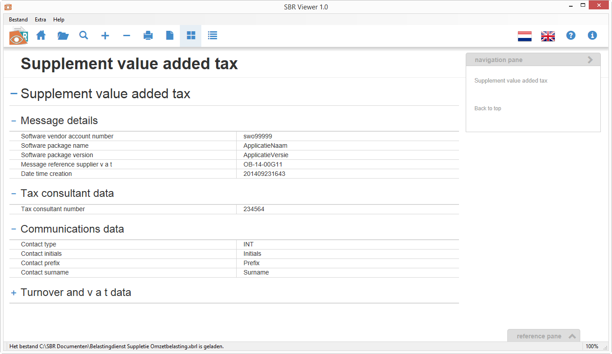
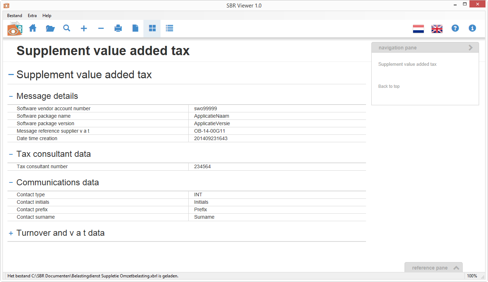

Over de viewer About the viewer

Met de SBR Viewer kunt u snel en eenvoudig de inhoud van een SBR document (*.xbrl) raadplegen. Door de overzichtelijke manier van presenteren is er geen specifieke kennis van de complexe SBR-taxonomie vereist. De SBR Viewer maakt de inhoud van een SBR document toegankelijk voor iedereen. The SBR Viewer enables its users to open and explore the content of SBR documents (*.xbrl). Users of the SBR Viewer do not need to have any technical expertise or specific knowledge about the SBR taxonomy. The Viewer presents every document in a clear and organized way.
De SBR Viewer is onder meer een uitkomst voor accountants en administratiekantoren die hun klanten ter kennisgeving een verzonden aangifte, deponering, kredietaanvraag of accountantsverklaring willen toesturen. Op dit moment worden dergelijke uitwisselingen vaak in de vorm van een pdf-bestand gedaan. Hiervoor moet het aangeleverde SBR document eerst worden geconverteerd. Door de komst van de SBR Viewer zijn deze (tijdrovende) conversieprocessen niet langer noodzakelijk. De SBR Viewer maakt het mogelijk om de inhoud van een SBR document direct, zonder ingewikkelde tussenhandelingen, te verkennen. The SBR Viewer is a great solution for accountants and administrative offices that want to send SBR documents to their clients, in order to keep them informed. Think, for example, of an accountant who sends a tax return he submitted to one of his clients as notification. At this time, such exchanges are mostly done by e-mail in the form of a PDF file. Before you can exchange a SBR document in the form of a pdf file, a complex and time-consuming conversion has to take place. The SBR Viewer makes such actions redundant and enables you to consult the content of a SBR document directly.
Waarom? Why? 
